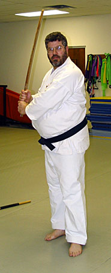

Sensei Schulman grew up in Detroit, Michigan. Athletically inclined as a child, Sensei Schulman started organized hockey at the age of ten. He played
hockey for eight years and was offered a tryout with the Junior Wings, which was the farm club for the Detroit Red Wings. Schulman grew tired of organized
sports and wanted something more. In March of 1972, at the age of 19, Schulman begain his martial arts training in the Korean art of Tang Soo Do. For
Sensei Schulman, the martial arts became a moving meditation to unify mind, body and spirit.
He soon developed a reputation as an excellent fighter. He started teaching private students and also taught classes for the Jewish Community Center in Detroit.
His first student to attain the rank of black belt was Keith Fishman. When Sensei Schulman moved to Ann Arbor, he turned his students and classes at the Jewish
Community Center over to Mr. Fishman. After obtaining the rank of fourth degree black belt in Tang Soo Do, a restlessness with his martial arts training pushed him forward.
A very good friend and mentor, Sensei Bobby Polychronopolis, introduced him to Master Tadashi Yamashita. Sensei Polychronopolis is a professional martial artist and runs a
huge organization in Athens, Greece. After Master Yamashita accepted Sensei Schulman as a student, Sensei Polychronopolis was given the responsibility of his initial supervision.
The world of martial arts opened up to Sensei Schulman and under Master Yamashita's guidance, Sensei Schulman rapidly progressed.
Sensei Schulman currently holds a sixth degree black belt in Shorin-Ryu, and a fifth degree black belt in Yamashita-Matayoshi Kobudo.